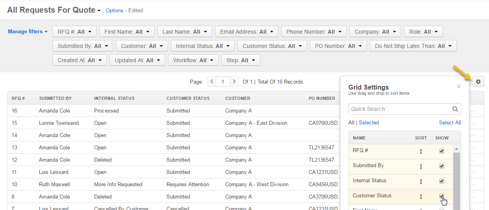

RFQ Backoffice Workflow¶
Overview¶
RFQ (Request For Quote) Backoffice Workflow is a system workflow that defines the sequence of steps and transitions that an RFQ can go through in the management console.
To reach the workflow:
- Navigate to System > Workflows in the main menu.
- Click RFQ Backoffice to open the flow.
On the RFQ Backoffice page, you can perform the following actions:
- Clone the workflow - click Clone to clone the workflow.
- Deactivate the workflow - click Deactivate to deactivate the workflow.
Within the Workflows grid, you can perform the following actions for the RFQ Backoffice workflow:
- Clone the workflow:
- View the workflow:
- Deactivate the workflow:
RFQ Statuses¶
RFQ Backoffice and Frontoffice workflows are interconnected. When the RFQ Backoffice and Frontoffice workflows are active, the following statuses are available:
Internal Statuses (Marked RFQ Backoffice on the RFQ page) are the statuses displayed in OroCommerce to the sales personnel:
- Open
- Processed
- More Information Requested
- Declined
- Cancelled
- Deleted
Note
RFQs with internal status Deleted are not visible in the front store.
Customer Statuses (Marked RFQ Frontoffice on the RFQ page) are the statuses displayed to customers in the front store. In the management console, they are visible on the view page and in the grid:
- Submitted
- Pending Approval
- Requires Attention
- Cancelled
Note
These statuses cannot be edited or deleted.

Note
You can add and remove columns in the grid by clicking on the far right of the grid.
Steps and Transitions¶
The RFQ Backoffice consists of the following steps and transitions:
Steps:
- Open
- More Information Requested
- Processed
- Declined
- Cancelled
- Deleted
Transitions:
- For Open: Mark as Processed, Request More Information, Decline, Cancel, Delete.
- For More Information Requested: Cancel, Delete, Info Provided.
- For Processed: Delete.
- For Declined: Cancel, Delete, Reprocess.
- For Cancelled: Delete, Reprocess.
- For Deleted: Undelete.
Note
Please note that the Info Provided transition for the More Information Requested step is automatically triggered and it does not, therefore, take the form of a button in the interface.
Note
Steps that follow the Undelete transition depend on the internal and/or customer statuses prior to deletion:
- If the previous internal status is Cancelled By Customer (step Cancelled), the internal status becomes Cancelled By Customer.
- If the current customer status is Submitted or Cancelled and the previous internal status is not Cancelled By Customer (step Open), the internal status becomes Open and the customer status becomes Submitted.
- If the current customer status is Requires Attention and the previous internal status is not Cancelled By Customer (step More Info Requested), the internal status becomes More Info Requested.
As an illustration, let us go through a sample flow to see RFQ Backoffice in action:
- Once an RFQ is received, it is automatically moved to the Open step with a possibility to mark this request processed, request more information, decline or delete it.
- More information has been requested, the RFQ is now in the More Information requested step with Requires Attention customer status. The only transition available in this step is Delete.
Note
It is possible to create a quote or an order straight from the RFQ page by clicking on the corresponding buttons in the top right corner of the page.
- More information has been provided, the sales person marks the RFQ processed and creates a quote straight from the RFQ view page.